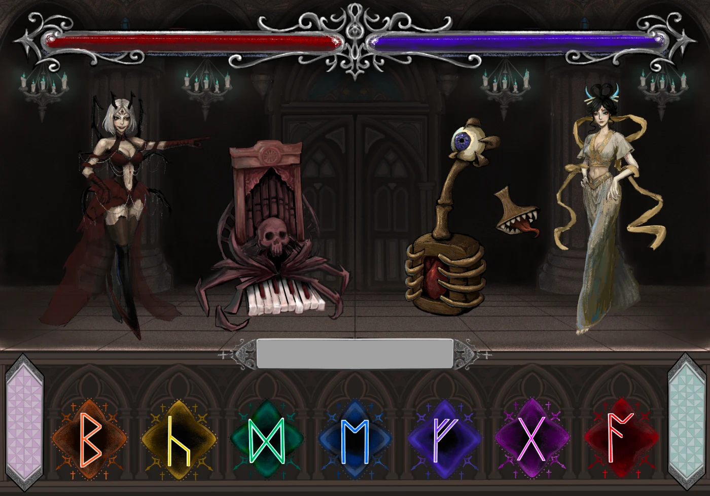
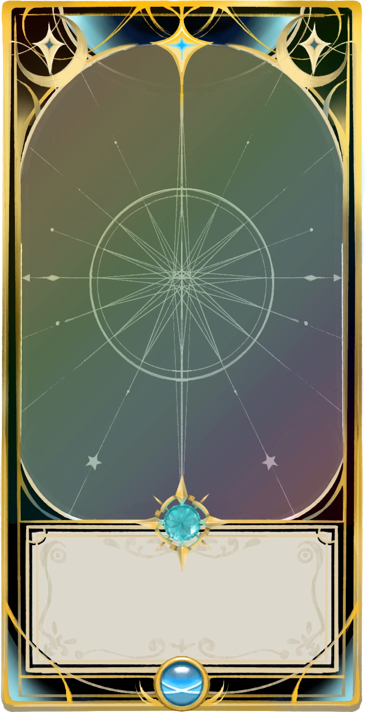
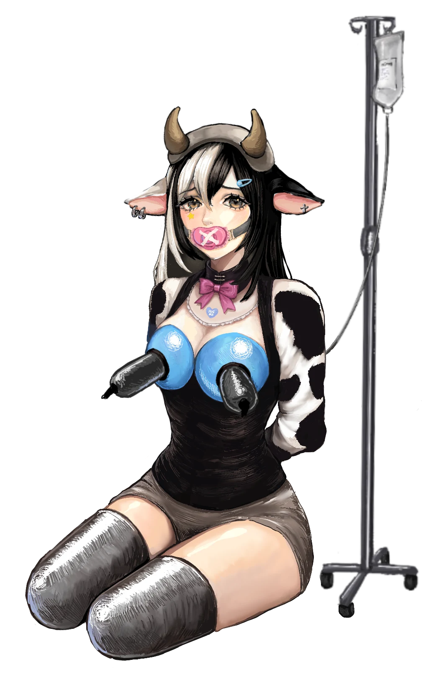
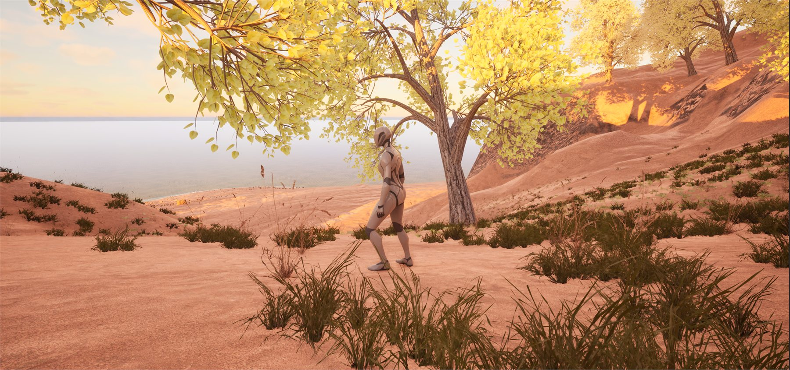

iiiArt
A gallery of original work
Character, concept, interface and environment art. Select any piece to view it at full size.
Two dimensions







Three dimensions



iiiArt
Character, concept, interface and environment art. Select any piece to view it at full size.



